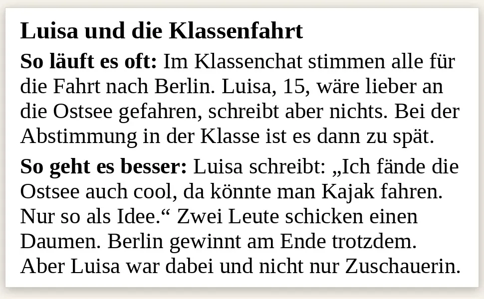
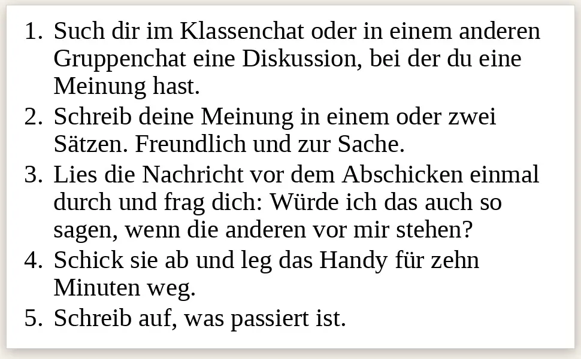

Stück für Stück zu mehr Selbstvertrauen für Jugendliche
Acht Stufen und 24 Aufgaben, die langsam größer werden. Für Jugendliche ab etwa 13.
Öffnet amazon.de in einem neuen Tab.
Du würdest im Klassenchat gern was dazu schreiben, aber dann lieber doch nicht.
Du würdest dich gern melden, aber was, wenn die Antwort falsch ist? Du musst dafür nicht schüchtern sein. Dieses Buch zeigt dir, wie du dir Stück für Stück mehr zutraust. Es fängt klein an, allein und ohne Publikum, und wird mit jeder Aufgabe ein bisschen größer. Hinten im Buch gibt es einen Abschnitt für Erwachsene, die es verschenken. Ein Ratgeber zum Ausprobieren, keine Therapie.

Blick ins Buch: Luisa und die Klassenfahrt
Das Buch hat acht Stufen mit je drei Aufgaben. Sie führen von dir selbst über die Schule und den Freundeskreis ins Netz und nach draußen. Zu jeder Aufgabe zeigen Beispiele von Gleichaltrigen dieselbe Situation in zwei Fassungen: So läuft es oft. So geht es besser.

Blick ins Buch: die Aufgabe dazu in fünf Schritten
Nach den Beispielen kommen die Schritte zum Ausprobieren, ein Einwand und je eine kleinere und eine größere Variante. Im Taschenbuch folgt auf jede Aufgabe eine eigene Seite zum Reinschreiben, und zu jeder Stufe gibt es ein Bild zum Ausmalen.
Dieses Buch ist ein Ratgeber und kein Ersatz für eine Therapie oder Beratung. Wenn es dir gerade richtig schlecht geht, hol dir bitte Hilfe, zum Beispiel bei der Telefonseelsorge unter 0800 111 0 111 (kostenlos, rund um die Uhr). Wenn es dir gerade richtig schlecht geht, erreichst du auch die Nummer gegen Kummer unter 116 111 (kostenlos).
Öffnet amazon.de in einem neuen Tab.